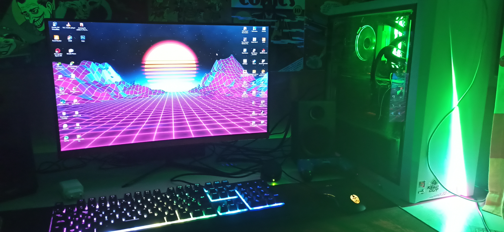

AFICIONES
Aquí sobre mis hobbbies que más me gustan realizar. Aparte de quedar con mis amigos como cualquier persona, tmabién tengo mis propias aficiones personales
INFORMÁTICA
Me encanta la informática, es por eso que estoy estudiando este ciclo. Es algo que actualmente tiene bastante futuro. De hecho yo mismo me he montado mi propio ordenador. Y es bastante potente, está preparado tanto para trabajar como para jugar a cualquier juego con los gráficos en ultra. Aquí adjunto foto:

ESPECIFICACIONES DE MI SET-UP
VIDEOJUEGOS
Como a cualquier chaval de hoy en dia, los videojuegos es un hobbie que también me gusta. Me lo paso muy bien jugando a ellos, sobre todos si es con amigos. Los juegos a los que más juego con amigos actualmente es al Rainbow Six, Grand Theft Auto V, Fortnite, Counter Strike y Rocket League. Minecraft también es un clásico. Aquí algunos videos sobre cada uno:
DIBUJO
Ya no lo suelo hacer tanto como antes, pero si que lo xontinuo haciento en mis ratos libres. Me gusta dibujar desde pequeño y según la gente que ve mis dibujos dicen que estan bien, aunque yo sigo pensando que siempre se puede mejorar. Aqui algúnos garabatos de mi cuaderno de dibujos